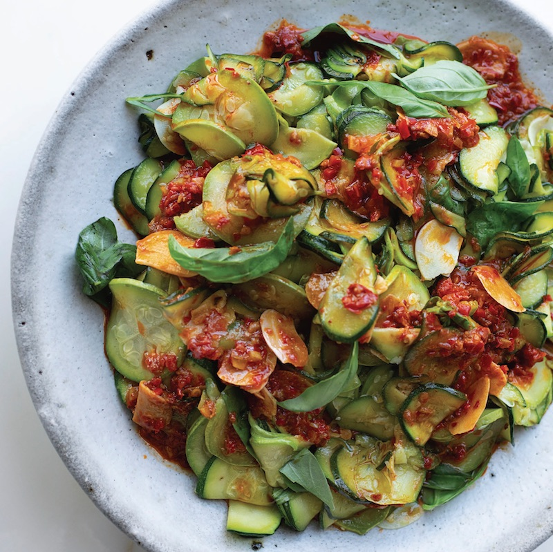

Super-Soft Courgettes with Harissa & Lemon

The courgette can be such a difficult vegetable. People suggest it is bitter (they are right),
people suggest it is bland (they are also right), people suggest it is not very interesting (they are also right).
Courgettes have a special place in my heart, for a reason I wasn't aware of until I made this dish - the throwback to my lunchtime meals in China,
heading down to the local foodcourt in Sanlitun to get some super cheap rice with three mains. Being veggie didn't mean it was more difficult, in fact Chinese cooking
lends itself very well to vegetable dishes, and the way courgettes are cooked in this dish is what got me into courgettes properly. Taking the initial concept of cooking the
courgettes in the water which seeps from them as they cook means a stew is formed. We can then add any of our favourite flavours to this, and create some delicious creamy, healthy dishes.
Ingredients
- 80ml olive oil
- 6 garlic cloves , finely sliced
- 1 tbsp rose harissa
- 1 red chile , finely chopped
- 1/2 preserved lemon , finely chopped, discarding any seeds (1 tbsp)
- 4 1/2 tsp lemon juice
- 1kg zucchini , finely sliced
- Salt
- 10g basil leaves , roughly torn
Process
- Place a large, nonstick sauté pan on medium-high heat and add the olive oil and garlic. Fry gently for 4 minutes, stirring often, until soft, golden, and aromatic. You don’t want the garlic to become at all browned or crispy, so decrease the heat if necessary. Remove 3 tbsp oil, along with half the garlic, and transfer to a small bowl. Add the harissa, chile, preserved lemon, and lemon juice to the bowl; stir together; and set aside.
- Return the pan to high heat and add the zucchini and 1 1/4 tsp salt. Cook for about 18 minutes, stirring often, until the zucchini are very soft but still mostly holding their shape (you don’t want the zucchini to brown, so decrease the heat if necessary). Stir in half the basil and transfer to a platter. Spoon the harissa mixture over the zucchini. Let sit for 15 minutes, then sprinkle with a pinch of salt and finish with the remaining basil before serving.